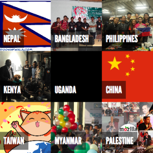

Atul Varma set up a quilt for MozCamp Asia 2012 which I thought was a fantastic tool for that type of event. It provided an engaging visualization, was collaboratively created, and allowed a quick and easy way to dive further into the details about the participating groups.
I wanted to use it for a couple of projects, but the code was tied pretty closely to that specific content and layout.
This week I finally got around to moving the code over to Mozilla Webmaker, so it could be easily copied and remixed. I made a couple of changes:
- Update font to Open Sans
- Make it easy and clear how to re-theme the colors
- Allow arbitrary content in squares The JS code is still a bit too complex for what's needed, but it works on Webmaker now!

View my demo quilt. Hit the "remix" button to clone it and make your own.
The source for the core JS and CSS is at https://github.com/autonome/quilt.